Securing Your Website
A hands-on guide to staying out of
(the wrong kind of) news
Julien Vehent
Mozilla
$whoami
|

Web Application Security
in four steps
- Content Injection
- Accepting User Generated Content
- Cookie Security
- Authenticating users
- HTTPS
- Testing Security
Let's take a random target...
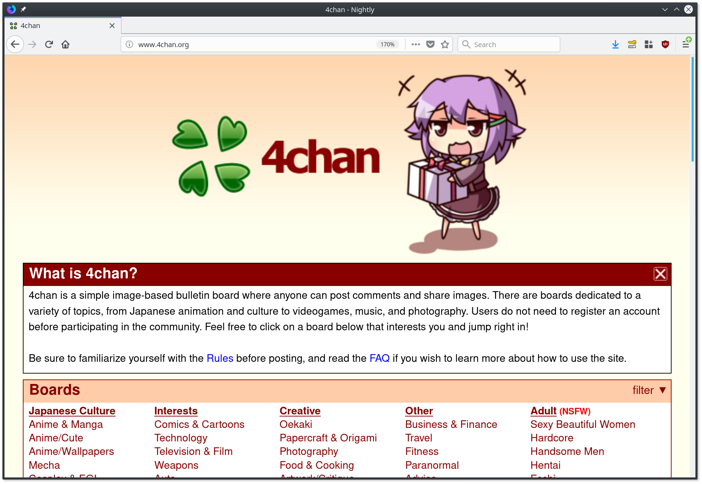Like most website, it has a few issues
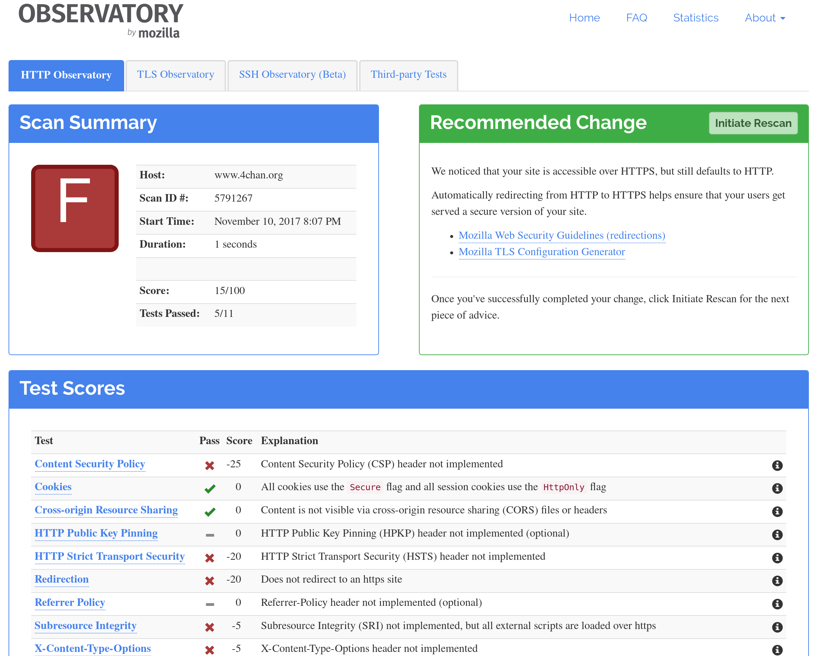Content Injection
Hacker's favorite way to blow up your webapps since....
pretty much forever.
Cross-Site Scripting
Cross-site scripting (XSS) is a security exploit which allows an attacker to inject into a website malicious client-side code. This code is executed by the victims and lets the attackers bypass access controls and impersonate users.
Cross-Site Scripting
<script type='text/javascript'>alert('xss');</script>
Cross-Site Scripting
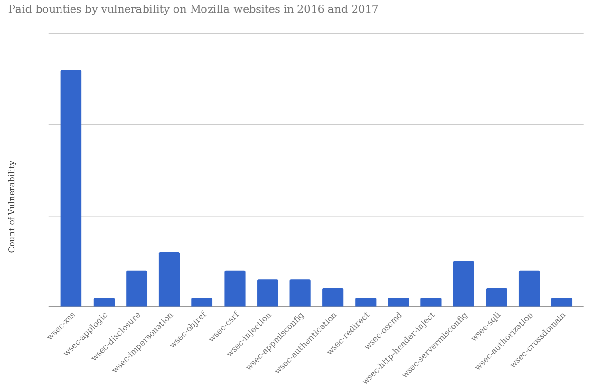Content Security Policy
the XSS remedy
Content-Security-Policy: default-src *; object-src 'none'
Disable the use of unsafe inline/eval,
allow everything else except plugin execution.
CSP in your application
func setResponseHeaders() Middleware {
return func(h http.Handler) http.Handler {
return http.HandlerFunc(func(w http.ResponseWriter, r *http.Request) {
w.Header().Add("Content-Security-Policy",
"default-src *; object-src 'none'")
w.Header().Add("X-XSS-Protection",
"1; mode=block")
h.ServeHTTP(w, r)
})
}
}
You need to return the CSP header on every HTTP response.
Accepting user generated content

Accepting user generated content
This is easy: DON'T REFLECT IT ON YOUR MAIN ORIGIN!
Put user generated data on a separate domain that doesn't have cookies, and insert it on your main site with an iFrame.
This prevents UGC from having access to the origin.
Accepting user generated content
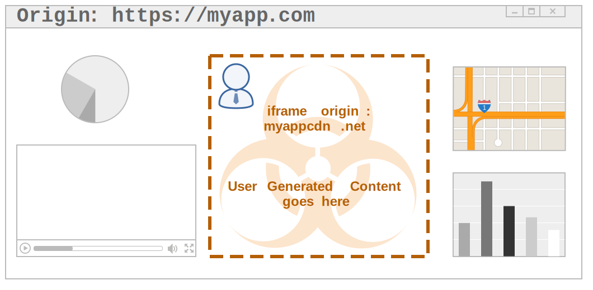This is (partly) why Facebook puts user images on "fbcdn.net"
Cookie Security
Cookies are well protected in the browser, if you use them the right way. A few rule of thumb:
- Don't let Javascript read them, set the HTTPOnly flag
- Don't send them in clear, set the Secure flag
- Use sensible expiration via Expires or Max-Age
- Don't send them around, set SameSite=Strict
Cookie Security
Wait... what was that last one?
SameSite is a new cookie attribute that tells the browser to only send the cookie back to the origin is was set from.
Cookie Security
SameSite prevents third-party sites from forcing you to send requests with your cookies. It's like a CSRF token, only nicer.
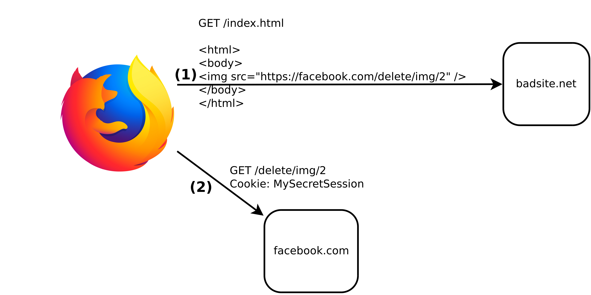Authenticating Users
Don't store user passwords, don't end up on this list.
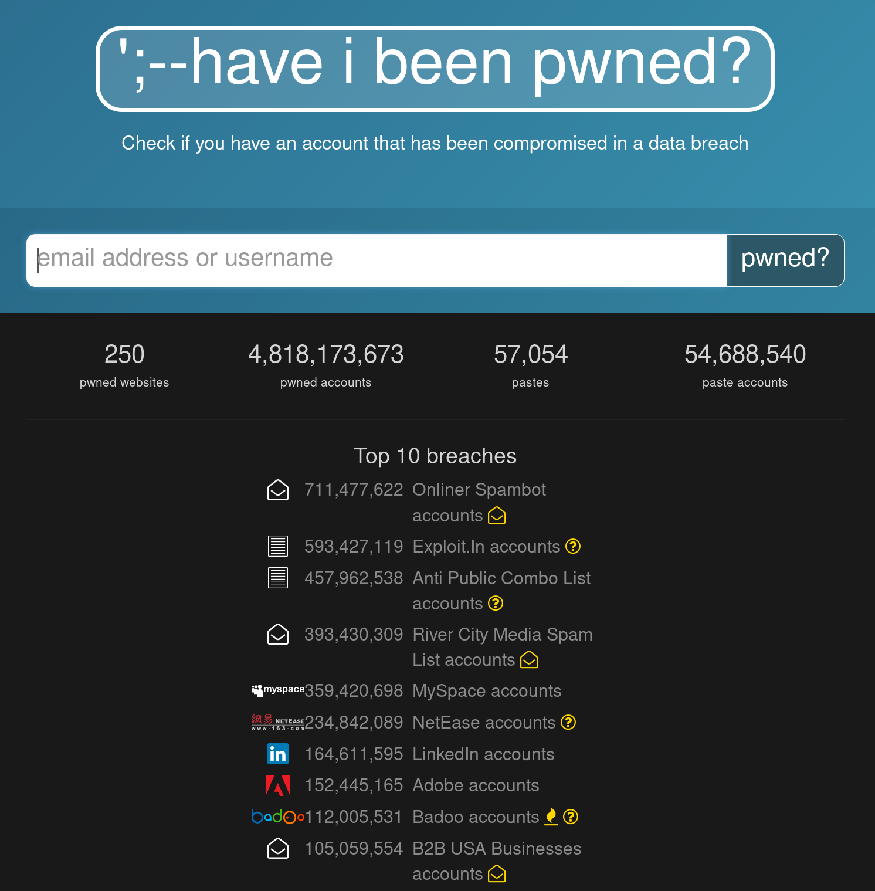Authenticating Users
Let someone else do identity management for you.
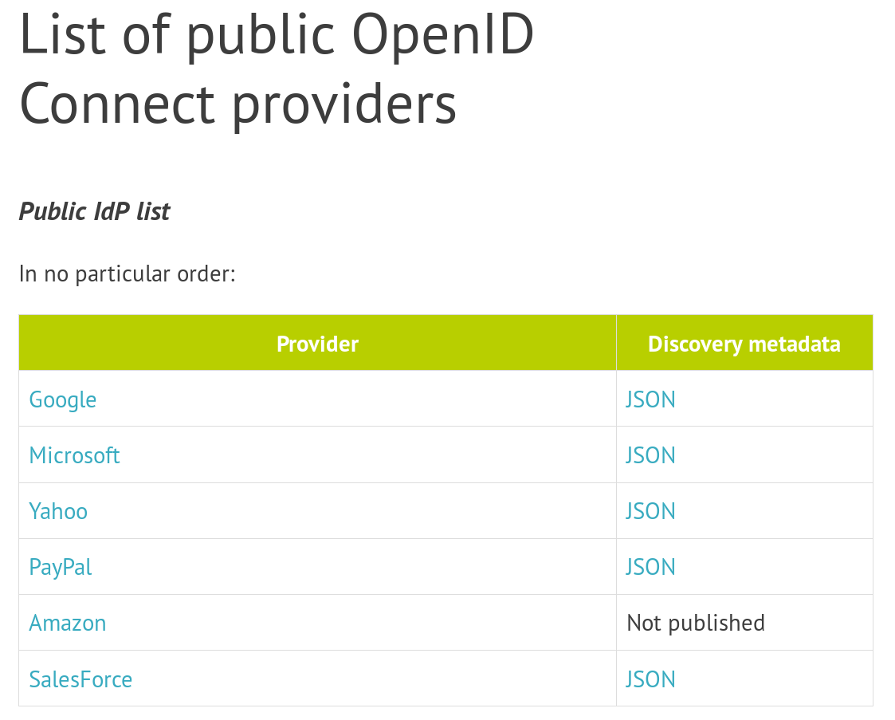Authenticating Users
Benefits of delegating identity management:
- No more passwords in your database
- Most providers support two-factor authentication already
- Most providers will do fraud detection
- Users don't have to remember 3,719 passwords
Dependencies
If you're going to pull half the internet into your code,
at least make sure it's up to date.
Dependencies testing tools
- Nodejs: greenkeeper.io
- Python: pyup.io
- Snyk.io covers npm, pip, maven and rubygem
HTTPS
When TLS config test fails, we direct ops to the config generator

Testing Security
Four main types of security tests:
- Web application vulnerability scanning
- Fuzzing
- Static Code Analysis
- Relying on external researchers
Web application vulnerability scanning
Automated tools that spider your website and apply series of tests to each resource discovered.

Web application vulnerability scanning
Spidering/Discovering all resources can be hard (particularly on modern webapps), so another option is to proxy browser traffic through the scanner.

Fuzzing
Inject junk into the interfaces of an app to make it crash.

Static Code Analysis
Analyse the source code for security issues.
$ bandit -r src/github.com/Kinto/kinto
Severity: High Confidence: High
Location: src/github.com/Kinto/kinto/kinto/plugins/accounts/scripts.py:36
>> Issue: [B322:blacklist] The input method in Python 2 will read from
standard input, evaluate and run the resulting string as python source
code. This is similar, though in many ways worse, then using eval.
On Python 2, use raw_input instead, input is safe in Python 3.
35 print('Username should match {0!r}, please try again.'.format(validator.regexp))
36 username = input('Username: ')
Static code analysers exist for many languages: bandit for python, eslint for javascript, gas for golang, etc.
Drive your security testing from continuous integration
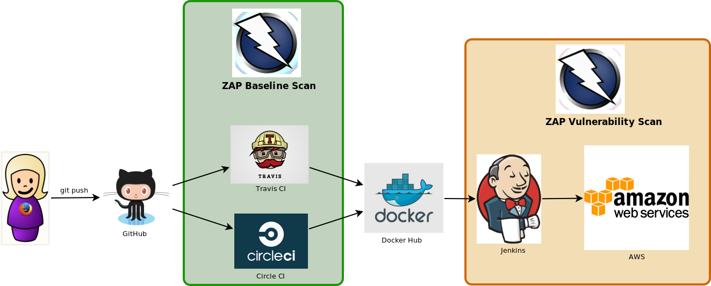Don't deploy to prod unless the security tests pass in dev.
ZAP example in CircleCI
test:
override:
- docker run mozilla/cutefox
background: true
# pull down the ZAP docker container
- docker pull owasp/zap2docker-weekly
# Run ZAP against the application
- >
docker run -t owasp/zap2docker-weekly zap-baseline.py
-t http://172.17.0.2:8080/
Pass/Fail output, like unit tests
PASS: Absence of Anti-CSRF Tokens [40014]
WARN: Web Browser XSS Protection Not Enabled [10016] x 3
http://172.17.0.2:8080/
http://172.17.0.2:8080//robots.txt
http://172.17.0.2:8080//sitemap.xml
Relying on external researchers
At a minimum, have a bug bounty program!

Relying on external researchers
As soon as you have the budget, hire specialists to audit your website. Ideally, make that report public too.
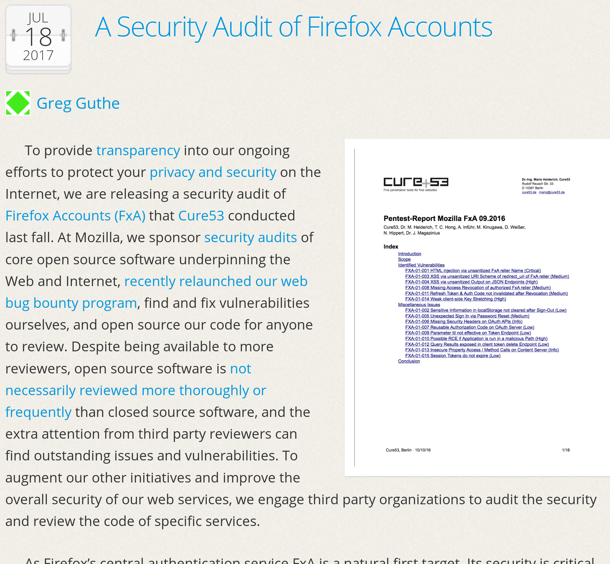How about securing your servers?
Must you really?
Unless you're a big shop, it's much safer to outsource:
Heroku, AWS ElasticBeanstalk, Google Cloud, etc.
To learn more about web application security
- Mozilla's Web Security Guidelines: wiki.mozilla.org/Security/Guidelines/Web_Security
- Firefox's Operations Security Checklist: wiki.mozilla.org/Security/FirefoxOperations
Thank you
Meet Samantha
She's a Full Stack developer
Sam used to work @slowcorp
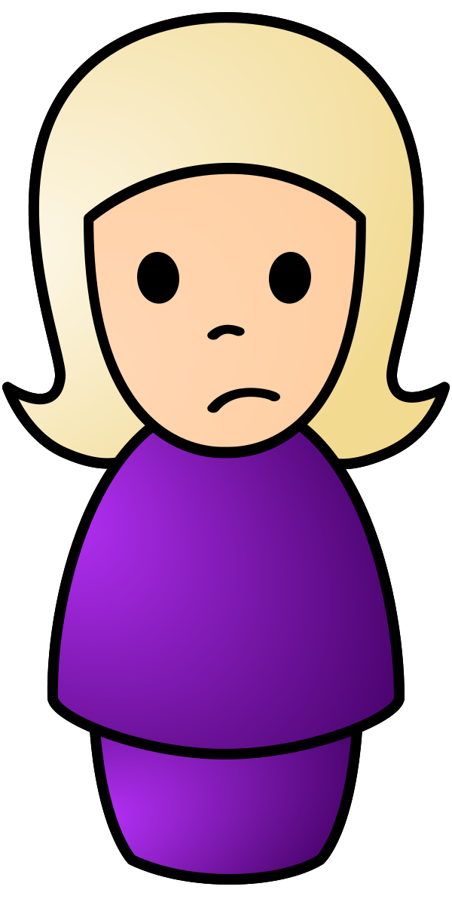She didn't like it much
- Internal private repos
- Manual deployment by ops, would take weeks
- Different platform between dev & prod
- No access to cool tools everyone else uses
Speed matters
Traditional ops where deployments take entire weeks
aren't acceptable anymore.
To compete, startups need fast release cycles.
15min from patch to prod is the new standard!
Sam now works at Mozilla
She gets to use all the cool stuff!
What's the cool stuff
- Code in public Github repo
- Circle/Travis CI to run tests
- Docker to build and deploy applications
- Continuous Deployment via Jenkins in AWS
- Logs in Kibana, monitoring in Datadog
In an ideal world, all deploys are automated and instantaneous
in the real world, we're not quite there yet, but you get the point
Security versus DevOps
aka. The Wrong way
- DevOps team optimizes for fast iterations
- Security team optimizes for fewer incidents
Both sides typically work against each other, actively arming both the roadmap and security of the product
Security into DevOps
- Test Driven Security (TDS) integrated into the delivery pipeline. Use security tests to gradual improve application & infrastructure security.
- Monitoring & blocking attacks, via fraud detection techniques and incident response.
- Managing risks throughout the life-cycle of the service.
Continuous Security at Mozilla
Walkthrough through the life-cycle of a project, from inception to retirement
Sam is building a new service
CuteFox: a REST API that sends webpush notifications to Firefox users with photos of cute foxes.
When the project starts,
we talk risk together
RRA: Rapid Risk Assessment
A ~30min friendly discussion between the devs, ops, products managers and security team to go over the business risks of the project
done remotely!
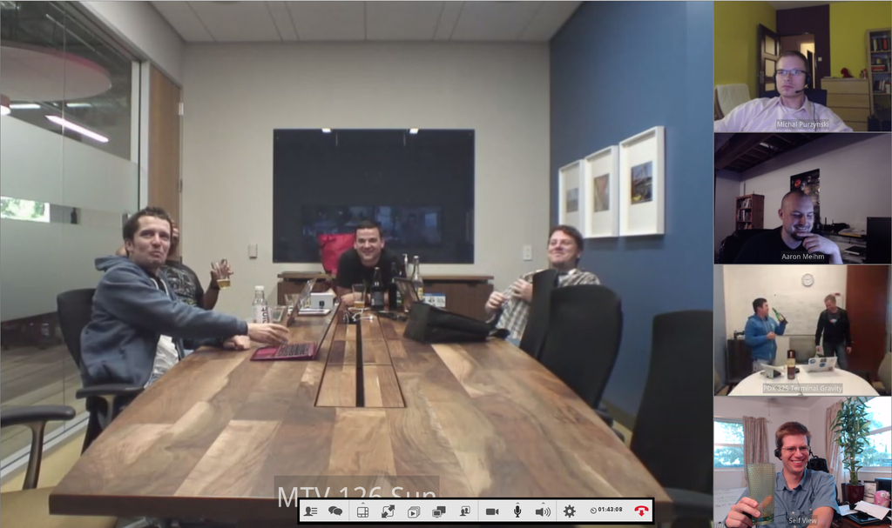A risk summary table from the RRA
RRA outputs recommendations
We capture those recommendation into a "Risk Summary" bug. The bug stays open for the lifetime of the service and serves as a tracker for security discussions related to the project
The project team understands the risks their project is exposed to.
Sam goes coding
We help Sam avoid
common webapp vulnerabilities
- Mozilla Web Security Guidelines
wiki.mozilla.org/Security/Guidelines/Web_Security - OWASP ZAP Scanning
github.com/zaproxy/ZAP-Baseline-Scan - Require baseline security on all websites (CSP, Secure Cookies, TLS Only, ...)
We also ask Sam to
keep her app up to date
- Node.JS: NSP, Greenkeeper.io
- Python: requires.io, pip --outdated
- Go: govend
TDS for dependency management
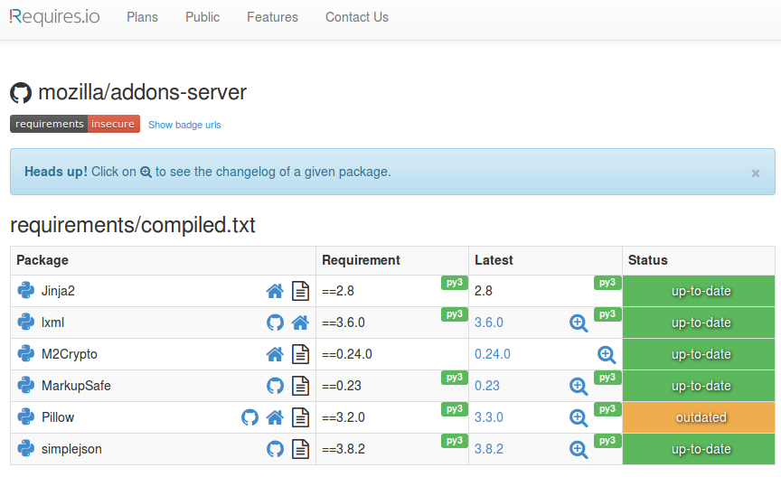Developers own the operational security of their application
We don't bolt it on top with WAFs and so on, we build security into the app directly
Then we deploy
Meet Max
He's the Ops guy
Max has to write all the provisioning code
- Build the AWS infra via cloudformation
- Setup the jenkins pipeline to for continuous deployment (Docker container deployed to EC2 instances with Jenkins, Ansible, Cloudformation and Puppet).
- He often helps the devs make architecture decisions, like how to use CDNs, caching, etc...
We help Max with tools...
- Managing secrets (SOPS) to prevent leaks
- Configuring good TLS on endpoints (TLS Observatory)
- Disabling users that have left the company (Userplex)
- Building crypto services so services don't have to manage keys (Autograph)
and Guidelines
- Require that admin panel must be placed behind VPN
- Perform audits and incident response training with the teams
etc...
Sec team builds solutions
to help DevOps
- Dev or Ops come see us with a problem
- We discuss it together
- Sec or Dev team builds a solution that solve the issue
- We generalize it so other teams can benefit as well
Example: storing secrets in git
Problem: secrets in cleartext files have a bad tendency to leak
Solution: SOPS - encrypt all credentials, decrypt at provisioning
# The secrets below are unreadable without access to one of the sops master key
myapp1: ENC[AES256_GCM,data:QsGJGjvQOpoVCIlrYTcOQEfQzriw,iv:ShmgdRNV6UrOJ22Rgr7habB74Nd/YFxU4lDh6jy6n+8=,tag:8GT6U8lzrI27DcFc1+icgQ==,type:str]
app2:
db:
user: ENC[AES256_GCM,data:Arbb,iv:7bjm4ZaVFlxNk3O4M1P67TqfFtXTOHOe5x9rjF6/R9o=,tag:d4+O8BUj+02qaeJorev2ww==,type:str]
password: ENC[AES256_GCM,data:9/jSxNCq0A==,iv:5mk+GS016hKGj6gVfQDMSyuuPy7/SVHLsqQXK3p1nds=,tag:AtK4nPFoSOOgdw6IZmiZmw==,type:str]
Test Driven Security for the infrastructure
- Test the TLS configuration daily (certificate, ciphersuites, ...)
- [future] Test security groups with mozilla/build-fwunit
- [future] Test AWS IAM policies
Example: Testing TLS configuration
$ tlsobs addons.mozilla.org
[...]
--- Analyzers ---
* Mozilla evaluation: intermediate
- for modern level: remove ciphersuites ECDHE-RSA-AES128-SHA, ECDHE-RSA-AES256-SHA, AES128-GCM-SHA256, AES128-SHA256, AES128-SHA, AES256-GCM-SHA384, AES256-SHA256, AES256-SHA, DES-CBC3-SHA
- for modern level: consider adding ciphers ECDHE-ECDSA-AES256-GCM-SHA384, ECDHE-ECDSA-CHACHA20-POLY1305, ECDHE-RSA-CHACHA20-POLY1305, ECDHE-ECDSA-AES128-GCM-SHA256, ECDHE-ECDSA-AES256-SHA384, ECDHE-ECDSA-AES128-SHA256
- for modern level: remove protocols TLSv1, TLSv1.1
- for modern level: consider enabling OCSP stapling
- for modern level: use a certificate of type ecdsa, not RSA
- oldest clients: Firefox 1, Chrome 1, IE 7, Opera 5, Safari 1, Windows XP IE8, Android 2.3, Java 7
It's launch day! Foxes Everywhere!
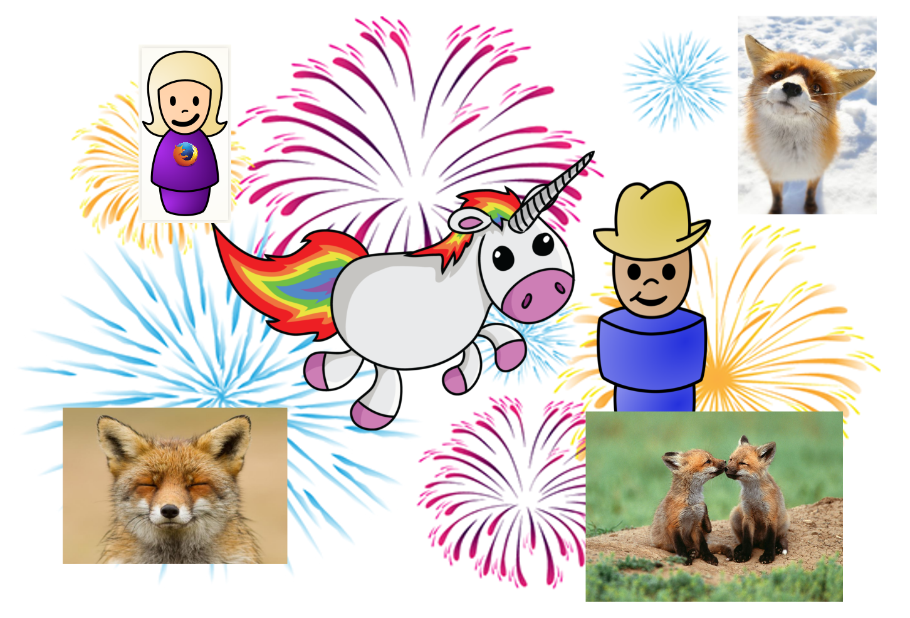Until bad guys start attacking CuteFox
Incident Response
No one in the DevOps team sleeps until the fire is out
Incidents suck
but they are great for
- Team building: Nothing like going through hell together to build trust!
- Roadmaps: Incidents always bump up the priority of security features.
- Security maturity: no amount of testing compares to an incident to evaluate the reliability of a service.
Continuous Security is a cycle
- design new feature
- assess risks
- implement feature
- test security
- deploy
- get attacked
- fight back
- learn
- rinse and repeat
Security must be part of the Product
Not an afterthought built on top
- Be a member of the DevOps team
- Understand the roadmap
- Share the successes
- Share the failures
- Write code that makes things better
It's not SecDevOps, it's just DevOps.
Security is a natural component of it.
Thank You
jvehent.github.io/continuous-security-talk